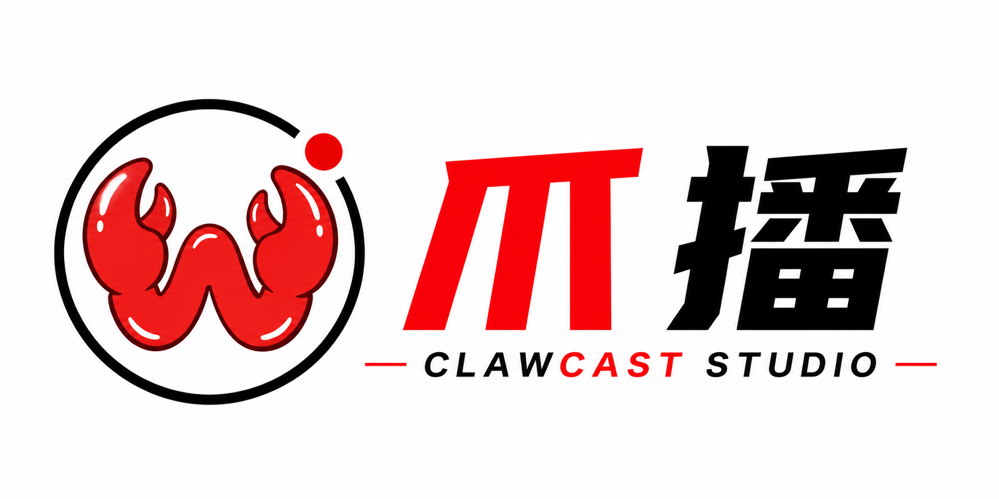

ClawCast Studio · 爪播
AI 创作者录播控制台
快速录屏
快速选窗口
显示名片
显示提词器
重置位置
检查更新
一键更新
重启应用
GitHub 同步：未检查
个人名片
悬浮样式
开始录屏
口播提词
昵称
个人定位
小字标签
简介
关注引导
使用摄像头
镜像摄像头
摄像头来源
本电脑摄像头
手机摄像头
手动选择
摄像头设备
头像图片
名片大小
小
中
大
显示模式
录课模式
清晰模式
主色
文字色
显示名片窗口
显示关注引导
名片置顶
鼠标穿透（锁定位置）
一键录当前屏幕
快速选择窗口
未开始录屏
选择屏幕、窗口或框选区域后点击开始。
屏幕录制
检查中
摄像头
检查中
麦克风
检查中
刷新权限状态
授权后重启 App
录制范围
整个屏幕
应用窗口
框选区域
帧率
24 fps
30 fps
60 fps
屏幕或窗口
刷新可录窗口
打开录屏权限设置
框选录制区域
未选择区域
同时录麦克风
开始录屏
停止并保存
打开最近文件
提词稿
滚动速度
字体大小
透明度
显示提词器
防录屏保护
提词器鼠标穿透
开始滚动
暂停
回到开头